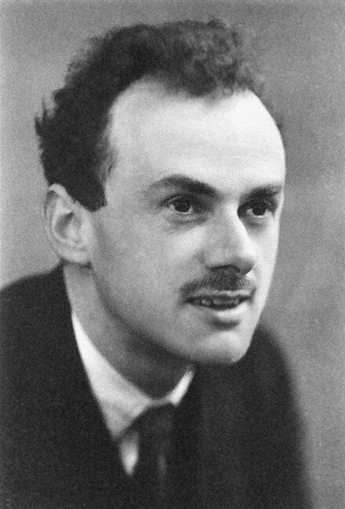

Multi-scale modeling:
Background


Scale - High Dimensionality - Curse of Dimensionality
Complexity - Empirical Model - Oversimplification
Mori-Zwanzig Formalism
In the Mori-Zwanzig formalism, the dynamics of the coarse-grained (CG) variables follow:
- \( \mathbf{Q} \): Center of mass
- \( \mathbf{P} \): Total momentum
- \( \mathbf{V} \): Velocity
- \( \mathbf{M} \): Mass matrix
- The Mori-Zwanzig formalism is general.
- In practice, one has to resort to simple and ad hoc approximations.
- Oversimplification of Memory Contribution under-explored.
Ad hoc Approximations
In the Mori-Zwanzig formalism, the dynamics of the coarse-grained (CG) variables are unknown. Many existing models make simplifying approximations:
- Markovian-Pairwise
- \( \sum_{j} \mathbf{K}(Q_{ij}) \mathbf{V}_j . \)
- Non-Markovian Isotropic
- \( \int_0^t \mathbf{K}(t-s) \mathbf{V}(s). \)
- Non-Markovian Pairwise (NM-DPD)
- \( \sum_j \int_0^t \mathbf{K}(Q_{ij}, t-s) \mathbf{V}_{ij}(s) \, ds. \)
- üöÄ Non-Markovian Manybody (Our Model)
- \( \bm{\Xi}(\mathbf{Q}) \int_0^t e^{- \bm{\Lambda} (t-s)} \bm{\Xi}(\mathbf{Q})^T \mathbf{V}_{ij}(s) \, ds, \)
Important New Issues
-
To accurately model many-body dynamics, our neural network must respect physical symmetries:
-
Translation Invariance:\(\mathbf{\Xi}(\bQ_1 +\mathbf{b},\cdots,\bQ_M +\mathbf{b}) = \mathbf{\Xi}(\bQ_1,\cdots,\bQ_M)\)
-
Rotation Symmetry: \(\mathbf{\Xi}_{ij}(\mathrm{U}\bQ_1,\cdots,\mathrm{U}\bQ_M) = \mathrm{U}\mathbf{\Xi}_{ij}(\bQ_1,\cdots,\bQ_M)\mathrm{U}^T\)
- Permutation Symmetries: \(\mathbf{\Xi}_{ij}(\bQ_{\sigma(1)},\cdots,\bQ_{\sigma(M)}) = \mathbf{\Xi}_{\sigma(i)\sigma(j)}(\bQ_1,\cdots,\bQ_M)\)
-
Translation Invariance:\(\mathbf{\Xi}(\bQ_1 +\mathbf{b},\cdots,\bQ_M +\mathbf{b}) = \mathbf{\Xi}(\bQ_1,\cdots,\bQ_M)\)
- Extensive
\(\mathbf{\Xi}\)( , , )
| Ξ11 | Ξ12 | Ξ13 |
| Ξ21 | Ξ22 | Ξ23 |
| Ξ31 | Ξ32 | Ξ33 |
\(\mathbf{\Xi}\)( , , )
| Ξ11 | Ξ12 | Ξ13 |
| Ξ21 | Ξ22 | Ξ23 |
| Ξ31 | Ξ32 | Ξ33 |
Neural Network Representation
- Introducing coordinate feature \(\hat{\mathbf Q}^k_i\): \( \hat{ \mathbf Q}^k_i = \mathbf{Q}_i \oplus \sum_{l\in\mathcal{N}_i} f^k(|\mathbf{Q}_{il}|)\,\mathbf{Q}_{il} \)
- Compute the distance on the feature: \( \hat{\mathbf{Q}}_{ij}^{k} = \hat{\mathbf{Q}}_i^{k} - \hat{\mathbf{Q}}_j^{k} \)
- Construct the state dependent part of the memory kernel: \( \boldsymbol{\Xi}^n_{ij} = \sum_{k=1}^K h_{n,k}(\hat{ \mathbf Q}_{ij}^T \hat{ \mathbf Q}_{ij}) \hat{ \mathbf Q}_{ij}^k \otimes \hat{ \mathbf Q}_{ij}^k \)

Simulation of the Coarse-Grained Models
\( \dot{\mathbf{P}} = \mathbf{F}^C - \bm{\Xi}(\mathbf{Q}) \int_0^t e^{- \bm{\Lambda} (t-s)} \bm{\Xi}(\mathbf{Q})^T \mathbf{V}_{ij}(s) \, ds + \mathbf{R}(t), \)
- The construction easy to do simulation. \[ \begin{aligned} \dot{\mb Q} &= \mb M^{-1}\mb P \\ \dot{\mb P} &= -\nabla U(\mb Q) + \bm \Xi(\mb Q)\bm\zeta \\ \dot{\bm\zeta} &= - \bm \Xi(\mb Q)^T \mb V - \bm\Lambda \bm\zeta + \bm \xi(t). \end{aligned} \]
üîë Thermodynamic Consistency
By choosing the white noise \(\bm\xi(t)\) following \( \left\langle \bm \xi(t) \bm \xi(t') \right\rangle = \beta^{-1}(\bm\Lambda + \bm\Lambda^T) \delta(t-t'), \) model retains the consistent invariant distribution \( \rho_{\rm eq}(\mb Q, \mb P, \bm\xi) \propto \exp[{-\beta(U(\mb Q) + \mb P^T \mb M^{-1} \mb P/2 + \bm \zeta^T \bm\zeta/2})] \)Data Collection
-
\(
\mb K(\bm {Q}, t) := \mathcal{P}_{\mb Z}[(
{\rm e}^{\mathcal{Q}_{\bm Z} \mathcal{L} t} \mathcal{Q}_{\bm
Z} \mathcal{L}\mb P) (\mathcal{Q}_{\bm Z} \mathcal{L}\mb P)^T],
\)
- \( \mathcal{P}_{\bm Z} f(\mb z) := \mathbb{E}[f(\mb z) \vert \phi(\mb z) = \bm Z ] \)
- \(\phi\) maps the full variable \(\mb z\) to the CG variable \(\mb Z\).
- \(\mathcal{Q}_{\bm Z} = \mb I - \mathcal{P}_{\bm Z}\)
- \(\mathcal{L}\) is the Liouvillian operator
-
The orthogonal dynamics \({\rm e}^{\mathcal{Q}_{\bm Z} \mathcal{L} t}\) is computationally intractable.
-
Approximate \(\mathcal{Q}_{\bm Z} \mathcal{L} \) by restrained dynamics \(\mathcal{R}_{\bm Z} \mathcal{L} \):
\( \dot{\mb q}_\mu = \mathcal{R}_{\bm Z} \mathcal{L} \mb q_\mu := \frac{\mb p_\mu}{m_\mu} - \frac{\mb P_i}{M_i} \qquad \dot{\mb p}_\mu = \mathcal{R}_{\bm Z} \mathcal{L} \mb p_\mu := \mb f_\mu - \frac{m_\mu}{M_i} F_i \)
-
The memory kernel is approximated as:
\( \mb K_{\text{MZ}}(\bm {Q} , t) = \left \langle \delta \mb F(t) \delta \mb F(0)^T\right\rangle, \)
where \(\delta \mb F = \mb F - \mathcal{P}_{\bm Z }(\mb F)\) represents the fluctuation force.
Numerical Result
\[ c(t)=\frac{\lt V_i(t) \cdot V_i(0) \gt }{ \lt V_i(0) \cdot V_i(0) \gt } \]
| Model | Temporal | Spatial |
|---|---|---|
| M-DPD | Markovian | Pairwise |
| NM-GLE | Non-Markovian | Isotropic |
| NM-DPD | Non-Markovian | Pairwise |
| NM-MB | Non-Markovian | Manybody |
Numerical Result
\[ C^{xx}(t; r_0) = \mathbb{E}[\mathbf{V}_i(0)\cdot\mathbf{V}_j(t) \vert Q_{ij}(0) = r_0] \]
| Model | Temporal | Spatial |
|---|---|---|
| M-DPD | Markovian | Pairwise |
| NM-GLE | Non-Markovian | Isotropic |
| NM-DPD | Non-Markovian | Pairwise |
| NM-MB | Non-Markovian | Manybody |
Numerical Result
\( G(r, t) \propto \frac{1}{M^2} \sum_{j\neq i}^M \delta(\Vert \mathbf{Q}_i(t) - \mathbf{Q}_j(0)\Vert - r) \).
| Model | Temporal | Spatial |
|---|---|---|
| M-DPD | Markovian | Pairwise |
| NM-GLE | Non-Markovian | Isotropic |
| NM-DPD | Non-Markovian | Pairwise |
| NM-MB | Non-Markovian | Manybody |
Numerical Result
Longitudinal Hydrodynamic Modes
\[ \begin{split} C_L(t) &= \langle \tilde{u}_1(t)\tilde{u}_1(0)\rangle \\ \tilde{\mb u} &= \frac{1}{M}\sum_{j=1}^M \mb V_j {\rm e}^{i\mb k \cdot \mb Q_j} \end{split} \]
| Model | Temporal | Spatial |
|---|---|---|
| M-DPD | Markovian | Pairwise |
| NM-GLE | Non-Markovian | Isotropic |
| NM-DPD | Non-Markovian | Pairwise |
| NM-MB | Non-Markovian | Manybody |
Numerical Result
Transverse Hydrodynamic Modes
\[ \begin{split} C_T(t) &= \langle \tilde{u}_2(t)\tilde{u}_2(0)\rangle \\ \tilde{\mb u} &= \frac{1}{M}\sum_{j=1}^M \mb V_j {\rm e}^{i\mb k \cdot \mb Q_j} \end{split} \]
| Model | Temporal | Spatial |
|---|---|---|
| M-DPD | Markovian | Pairwise |
| NM-GLE | Non-Markovian | Isotropic |
| NM-DPD | Non-Markovian | Pairwise |
| NM-MB | Non-Markovian | Manybody |
Extension to Nonequilibrium
- Predicting non-equilibrium processe, i.e. evolution under an external force field \(V_{\text{ext}}(\bq)\).
-
For a given configuration \(\bm {Q}\), theoretically:
\( \mb K(\bm {Q}, t) = \mathcal{P}_{\mb Z}[({\rm e}^{\mathcal{Q}_{\bm Z} \mathcal{L} t}\mathcal{Q}_{\bm Z} \mathcal{L}\mb P) (\mathcal{Q}_{\bm Z} \mathcal{L}\mb P)^T], \)
where the projection operator: \( \mathcal{P}_{\bm Z} f(\mb z) := \mathbb{E}[f(\mb z) \vert \phi(\mb z) = \bm Z ]. \) -
The Kernel depends on the conditional probability distribution \( \rho_{V_{\text{ext}}}(\bz|\bZ) = \frac{1}{Z} \delta(\phi(\bz)-\bZ) \rho_{V_{\text{ext}}}(\bz) \)
-
The Time dependent projection result in \(K(\bQ,t,s)\):
\( \dot{\mathbf{P}}(t) = -F(\mathbf{Q}) - \int_0^t \mathbf{K}(\mathbf{Q}(s), t,s)\,\mathbf{V}(s)\,ds + \mathbf{R}(t). \)
Extension to Nonequilibrium
- Predicting non-equilibrium processe, i.e. evolution under an external force field \(V_{\text{ext}}(\bq)\).
-
For a given configuration \(\bm {Q}\), theoretically:
\( \mb K(\bm {Q}, t) = \mathcal{P}_{\mb Z}[({\rm e}^{\mathcal{Q}_{\bm Z} \mathcal{L} t}\mathcal{Q}_{\bm Z} \mathcal{L}\mb P) (\mathcal{Q}_{\bm Z} \mathcal{L}\mb P)^T], \)
where the projection operator: \( \mathcal{P}_{\bm Z} f(\mb z) := \mathbb{E}[f(\mb z) \vert \phi(\mb z) = \bm Z ]. \) -
Increase the dimension of Coarse grained variables to make the marginal distribution closer
\( \rho_{V_{\text{ext}}}(\bz|\bZ) = \frac{1}{Z_{\text{ext}}} \delta(\phi(\bz)-\bZ) \rho_{V_{\text{ext}}}(\bz) \approx \frac{1}{Z_0} \delta(\phi(\bz)-\bZ) \rho_{0}(\bz) = \rho_{0}(\bz|\bZ) \)
-
The resultant model can be generalized to other external force fields.
\( \dot{\mathbf{P}}(t) = -F(\mathbf{Q}) - \int_0^t {\mathbf{K}(\mathbf{Q}(s), t-s) }\mathbf{V}(s) ds + \mathbf{R}(t). \)
Numerical Result:reverse Poiseuille flow
Numerical Result:Vortex flow
Summary
- Symmetry Enforcement: The neural network architecture explicitly respects translation invariance, rotation symmetry, and permutation symmetries, ensuring physically consistent dynamics.
- Thermodynamic Consistency: The model integrates neural networks into the Mori-Zwanzig framework, enabling accurate simulations while retaining thermodynamic consistency.
Outlook: Macroscopic Model
In collaboration with Huan Lei-
Non Fourier heat conduction
-
Fourier Law
\( u_t = \kappa \Delta u \)
Limitation:- Linear Approximation
-
Temperature cannot close the dynamics by itself
Reason: High temperature coexist multiple phases: fcc, bcc, hcp
Solution: Steinhardt order parameters as phase variables into dynamics.
-
Non Fourier Law
\[ \left( \begin{matrix} u_t \\ v_t \end{matrix} \right) = \left[ -\left( \begin{matrix} 0 & 0 \\ 0 & \alpha[u,v] \end{matrix} \right) + \nabla\cdot\Gamma[u,v] \nabla \right] \begin{matrix} \frac{\delta\mathcal{S}[u,v] }{\delta u } \\ \frac{\delta\mathcal{S}[u,v] }{\delta v } \end{matrix} \]
-
Fourier Law
Outlook: Macroscopic Model
In collaboration with Huan Lei-
Non fourier heat conduction
- Include the thermal fluctuation at nano-scale
- Extend to the diffusion process of active matter.
Stochastic optimal control (SOC)
- Traditional methods: Curse of dimensionality
- Deep reinforcement learning approaches
- Model-based methods require explicit transition kernels
- Model-free methods suffer from high variance in policy gradients
-
Our contribution (ICML, 2025)
- Gradient-free, model-free algorithm (M-CBO/Adam-CBO)
- Theoretical convergence guarantees
- Scalable to high dimensions
Problem Formulation
- State space: \( \mathcal{S} \subset \mathbb{R}^d \), Action space: \( \mathcal{A} \subset \mathbb{R}^m \).
- State process \( x_t \) governed by control \( \alpha_t \).
- Cost functional: \[ J[\alpha] \;=\; \mathbb{E}\!\left[\int_{0}^{T} f\!\big(t, x_t, \alpha_t\big)\,dt \;+\; g(x_T)\right]. \]
- Policy parameterized by a neural network: \( \alpha(t,x;\theta) \).
- Goal: \[ \min_{\theta}\; J(\theta), \qquad \text{where}\;\; J(\theta)=J\!\big[\alpha(\cdot,\cdot;\theta)\big]. \]
Original CBO Method
- Highly nonconvex unconstrained optimization problem: \[ \Theta^* \;=\; \arg\min_{\Theta \in \mathbb{R}^d}\; \mathcal{J}(\Theta) \]
-
Interacting particles during the dynamic evolution:
- tend to their weighted average
- undergo fluctuation due to random noise
- \(N\) particles \( \Theta^i, \; i=1,\cdots,N \) \[ d\Theta^i_t = -\lambda\!\left(\Theta^i - \mathcal{M}_\beta(\boldsymbol{\Theta})\right) dt + \sigma \,\color{red}{\left|\Theta^i - \mathcal{M}_\beta(\boldsymbol{\Theta})\right|}\, dW^i_t \] where weighted average: \( \mathcal{M}_\beta(\boldsymbol{\Theta}) = \frac{\sum_{i=1}^N \Theta^i \, e^{-\beta \mathcal{J}(\Theta^i)}} {\sum_{i=1}^N e^{-\beta \mathcal{J}(\Theta^i)}} \)
Some Practical Issues in CBO
- The initial data need to be well-chosen
- Difficult to optimize high-dimensional non-convex functions (e.g. Rastrigin function in dimension \(20\))
- Difficult to optimize deep neural networks with many parameters
First-order Momentum
- The same system without the random term but with inertia effect [Chen et al., 2022] \[ \gamma \ddot{\Theta}^i_t + \dot{\Theta}^i_t = -\lambda \left(\Theta_t^i- \mathcal{M}_\beta(\boldsymbol{\Theta})\right), \quad i=1,\cdots,N \]
- An equivalent first-order system: \[ \dot \Theta_t^i = \tfrac{1}{\lambda}\Omega_t^i, \quad \gamma \dot \Omega_t^i + \Omega_t^i = -\left(\Theta_t^i - \mathcal{M}_\beta(\boldsymbol{\Theta})\right) \]
- Reformulation and add the stochastic term: \[ \begin{aligned} d \Theta^i_t &= \lambda \Omega^i_{t-1}\,dt + \sigma(t)\, dW^i_{\theta,t}, \\ d \Omega^i_t &= -\gamma \Omega^i_{t-1}\,dt - m\!\left(\Theta_t^i - \mathcal{M}_\beta(\boldsymbol{\Theta})\right)\!dt + \sqrt{m}\,\sigma(t)\, dW^i_{\omega,t} \end{aligned} \]
Momentum Consensus-Based Optimization (M-CBO)
- Initialize population of \(N\) particles and momentum \((\boldsymbol{\Theta},\boldsymbol{\Omega})\).
- Consensus point: \[ \mathcal{M}_{\beta}(\boldsymbol{\Theta}) = \frac{\sum_{i=1}^N \Theta^i \, w_\beta(\Theta^i)} {\sum_{j=1}^N w_\beta(\Theta^j)}, \quad w_\beta(\Theta) = e^{-\beta \mathcal{J}(\Theta)} \]
- Dynamics: \[ \begin{aligned} d\Theta^i_t &= \Omega^i_t\,dt - \gamma_1\!\left(\Theta^i_t - \mathcal{M}_\beta(\boldsymbol{\Theta})\right)dt + \sigma(t)\,dW^i_{\theta,t}, \\ d\Omega^i_t &= -m\!\left(\Theta^i_t - \mathcal{M}_\beta(\boldsymbol{\Theta})\right)dt - \gamma_2\Omega^i_t\,dt + \sqrt{m}\,\sigma(t)\,dW^i_{\omega,t} \end{aligned} \]
Adaptive Momentum CBO (Adam-CBO)
- Replace constant \(m\) with adaptive term: \[ (V_\beta[\boldsymbol{\Theta}] + \epsilon I)^{-1} \] where \[ V_\beta[\boldsymbol{\Theta}] = \frac{\sum_{i=1}^N (\Theta^i - \mathcal{M}_\beta[\boldsymbol{\Theta}])^2 w_\beta(\Theta^i)} {\sum_{j=1}^N w_\beta(\Theta^j)} \]
- Similar to Adam optimizer → better convergence.
-
Algorithm details:
- Batch updates of agents
- Adaptive exploration strength
Theoretical Guarantees
Theorem (Convergence)
-
Under assumptions on cost \(\mathcal{J}\) and parameters:
- M-CBO converges to optimal policy.
- Exponential decay of energy functional: \[ E[\rho_t] \leq E[\rho_0]\,e^{-(1-\tau)\lambda t}, \quad E[\rho] = \tfrac{1}{2}\!\int \|\theta-\tilde{\theta}\|^2 + m^{-1}\|\omega\|^2\,d\rho \]
-
Key properties:
- Well-posedness of M-CBO dynamics
- Mean-field limit analysis
Assumptions on Cost Function \(\mathcal{J}\)
- There exists \(\tilde\theta\) such that \(\mathcal{J}(\tilde\theta) = \inf_\theta \mathcal{J}(\theta) =: \underline{J}\). Also bounded: \(\sup \mathcal{J} \leq \overline{J}\).
- Locally Lipschitz continuous: \(\|\mathcal J[\theta_1]-\mathcal J[\theta_2]\| \leq L_J (\|\theta_1\|+\|\theta_2\|)\|\theta_1-\theta_2\|\).
- Growth condition: \(\mathcal J(\theta) - \underline{J} \leq c_{\mathcal J}(1+\|\theta\|^2)\).
- There exist \(\delta_J,R_0,\eta,\mu >0\) such that \[ \|\theta - \tilde\theta\| \leq \tfrac{(\mathcal{J}(\theta) -\underline{ J})^\mu}{\eta} \quad \text{for all } \theta \in B_{R_0}(\tilde\theta), \] and outside the ball, \(\mathcal J(\theta) - \underline{ J } > \delta_J\).
- Noise strength \(\sigma(t)\) bounded: \(\underline{\sigma} \leq \sigma(t) \leq \overline{\sigma}\).
Rastrigin Function
Comparison with Different Random Processes
CBO
| d | N | M | \(\mathcal{N}(0,1)\) | \(\mathcal{U}(-1,1)\) |
|---|---|---|---|---|
| 2 | 50 | 40 | 100% | 100% |
| 10 | 50 | 40 | 100% | 100% |
| 20 | 50 | 40 | 98% | 22% |
| 20 | 50 | 20 | 66% | 2% |
| 30 | 50 | 40 | 26% | 0% |
| 30 | 500 | 5 | 0% | 0% |
Adam-CBO
| d | N | M | \(\mathcal{N}(0,1)\) | \(\mathcal{U}(-1,1)\) |
|---|---|---|---|---|
| 30 | 500 | 5 | 99% | 100% |
| 100 | 5000 | 5 | 100% | 100% |
| 1000 | 8000 | 50 | 92% | 20% |
Linear-Quadratic-Gaussian Control
Ginzburg–Landau Model
- Dynamics: \[ d\mathbf{x}_t = \mathbf{b}(\mathbf{x}_t,\alpha_t)\,dt + \sqrt{2}\,d\mathbf{W}_t, \quad b(\mathbf{x},a) = -\nabla_\mathbf{x} U(\mathbf{x}) + 2\alpha\,\boldsymbol{\omega} \]
- Trained control matches theoretical optimal: \[ \alpha(t,\mathbf{x};\theta)\approx -\boldsymbol{\omega}\cdot\nabla_{\mathbf{x}}u(t,\mathbf{x}) \]


Path Planning

Reinforcement Learning

Advantages of Adam-CBO
- Accuracy
- Scalability
- Handles non-convex cases
Summary
- Gradient-free, model-free method for high-dimensional SOC.
- Key advantages:
- No policy gradient estimation
- No state/action space discretization
- Theoretical convergence guarantees
- Demonstrated effectiveness on:
- LQG problems (1D–16D)
- Ginzburg–Landau model (up to 32D)
- Systemic risk mean-field control
- Code: github.com/Lyuliyao/Adam_CBO_Control